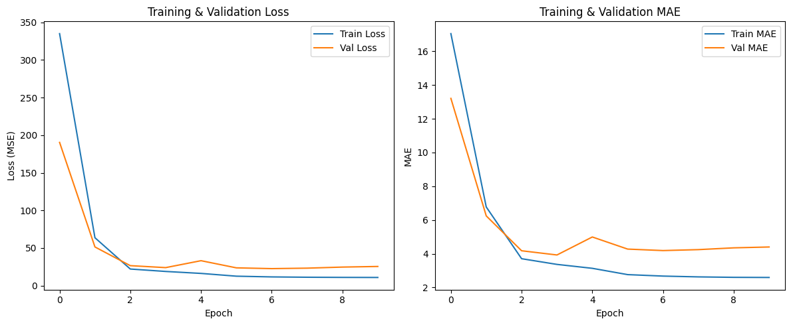
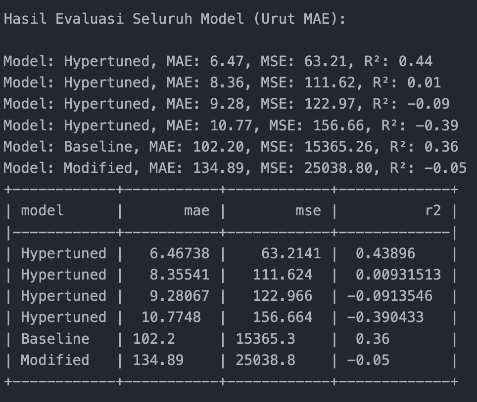
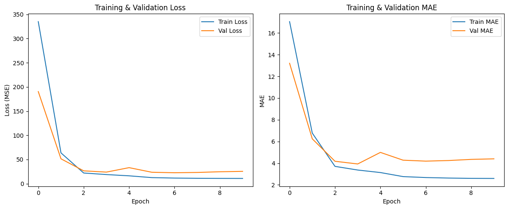
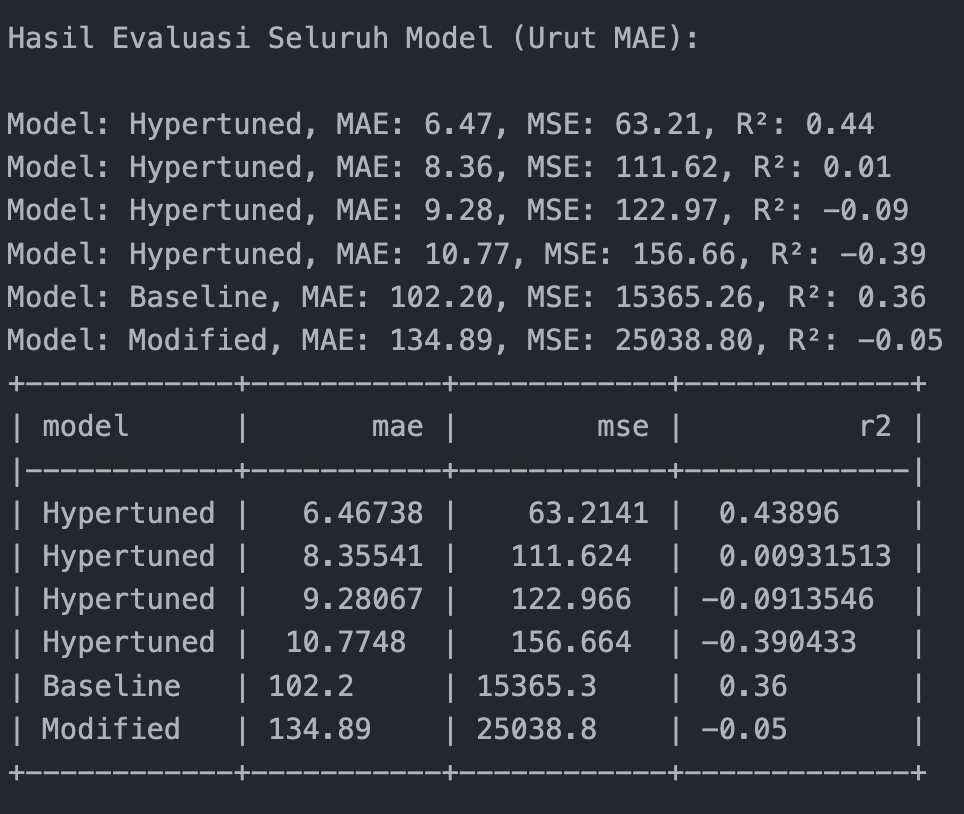

Project Showcase
Highlight of my featured works
Air Quality Forecasting
A multivariate time series project forecasting air quality index (AT) using deep learning. Includes decomposition, scaling, and LSTM/BiLSTM training with evaluation.
 



🎯 What I Learned
- Performed seasonal decomposition and PACF analysis
- Applied RobustScaler and MinMaxScaler preprocessing
- Built LSTM and BiLSTM models for forecasting
🛠 Tech Stack
- Python, Pandas, NumPy
- Matplotlib, Seaborn
- Statsmodels, Scipy
- Scikit-learn
- TensorFlow / Keras
📌 Evaluation / Next Step
BiLSTM outperformed the baseline and LSTM models by capturing bidirectional dependencies, achieving lower MSE/MAE and higher R². However, sudden external factors such as pollution spikes remain a limitation. Next steps: integrate weather/traffic data, hybrid ARIMA–LSTM models, and deployment for real-time forecasting.